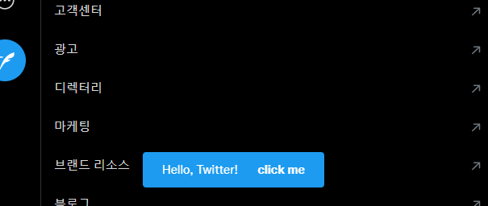

Redux Store
Redux는 JavaScript 상태 관리(State management) 라이브러리 중 하나이며, 트위터 웹에서도 사용하고 있는 것으로 알려져있다. 이 Redux store에 저장된 데이터는 개발자도구나 스크립트를 통해 접근하거나 값을 수정할 수 있다.
접근
Note
웹페이지 구조가 바뀌면 아래 코드가 작동하지 않을 수 있다.
다음과 같이 접근할 수 있다. (웹페이지 구조 변경에 따라 작동하지 않을 수 있음에 주의) getState()는 plain Object이고 따로 Immutable.js같은 건 도입하지 않은 듯 하다.
const reduxStore = document.getElementById('react-root')
._reactRootContainer._internalRoot.current
.child.child.child.child.child.child.child
.pendingProps.store
// state 가져오기
reduxStore.getState()
내부 구조
트위터 웹의 State에는 다음과 같은 키 값이 있다. 전부 다 복사하기엔 양도 많고 모르는 게 많아서 일부만 설명.
adFreeArticlesarticlesdomains-string배열. 각종 뉴스/언론사 웹사이트의 도메인이 들어있다. 리트윗 클릭시 “먼저 기사를 읽어주세요” 메시지를 띄울 때 쓰는 용도인듯.
audiobadgeCountcardStatechannelsTimelineBehaviorcommunityMembershipsdevicesdirectMessagesdmComposerdraftTweetseducationFlagsengagementNudgesentities- 트위터 API에서 가져온 유저정보, 트윗등이 담겨있다. 일종의 캐시인듯.cardscommerceItemscommunitiesimageCachelistsliveEventsmomentsrecommendationstopicstranslationsTweetstweets- 트윗 ID를 키로 가지는 object. 단, 트윗 작성자(user)는 Object가 아니라 유저 ID(string)만 들어있다.userCommunityInviteActionResultuserPresenceusers- 유저 ID를 키로 가지는 object
featureSwitch- Feature Switch 항목 참고.friendshipspendingFollowers- 팔로우 대기중인 유저 목록?
geoLocationhashflags- Hashflag 항목 참고.homeTimelineinstreamVideolistMembershipsliveTweetCountsmediaUploadmultiAccount- 다계정 로그인관련. 현재 로그인한 계정의 정보(users)와 알림 갯수(badgeCounts)가 있다.navigationocf_locationoptimistpartnerIdSyncpinnedListsplacePickerpreviewspromotedContentrecentSearchesrecommendationssavedSearchessession- 세션 정보.user_id는 현재 사용중인 계정의 ID가 있고, 국가(country) 및 언어(language)도 있다.settingsdataSaverlocalremote
teamstoaststweetComposertypeaheadUserstypeaheadV2urt- 내가 특정 스레드를 열어보거나, 무언가를 검색하거나, 실시간 트렌드를 조회하는 등을 할 때, 어떤 항목이 있는지 목록으로 들어있다.userClaimvisibilityResults
.dispatch
.getState()뿐만 아니라 .dispatch()도 작동한다. 가령, 트위터에 toast메시지를 띄울 땐 이렇게 한다.
reduxStore.dispatch({
type: 'rweb/toasts/ADD_TOAST',
payload: {
text: 'Hello, Twitter!',
// action은 메시지 옆구리에 붙는 버튼으로, 이 속성은 없어도 된다.
action: {
label: 'click me',
onAction() {
window.alert('Hey!')
},
},
},
})
